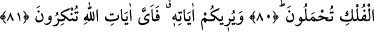
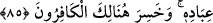

ALLAH
SİZE ÂYETLERİNİ
GÖSTERİYOR
79. Allah, kimine binesiniz, kimini yiyesiniz diye sizin için hayvanları yaratandır.
80. Onlarda sizin için daha nice faydalar vardır. Gönüllerinizdeki bir arzuya,
onlara binerek ulaşırsınız. Onların ve gemilerin üstünde taşınırsınız.
81. Allah size âyetlerini gösteriyor. Şimdi, Allah’ın âyetlerinden hangisini inkâr
edersiniz?
82. Onlar yeryüzünde gezip dolaşmadılar mı ki, kendilerinden öncekilerin sonu
nasıl olmuştur, görsünler! Öncekiler bunlardan daha çoktu, kuvvetçe ve
yeryüzündeki eserleri bakımından da daha sağlam idiler. Fakat kazandıkları şeyler
onlara asla fayda vermemiştir.
83. Peygamberleri onlara apaçık bilgiler getirince, onlar kendilerinde bulunan
(beşerî) bilgiye güvendiler (onu alaya aldılar). Alaya aldıkları şey kendilerini
boğuverdi.
84. Artık o çetin azabımızı gördükleri zaman: Allah’a inandık ve O’na ortak
koştuğumuz şeyleri inkâr ettik, derler.
85. Fakat azabımızı gördükleri zaman imanları kendilerine bir fayda
vermeyecektir. Allah’ın kulları hakkında süregelen âdeti budur. İşte o zaman
kâfirler hüsrana uğrayacaklardır.